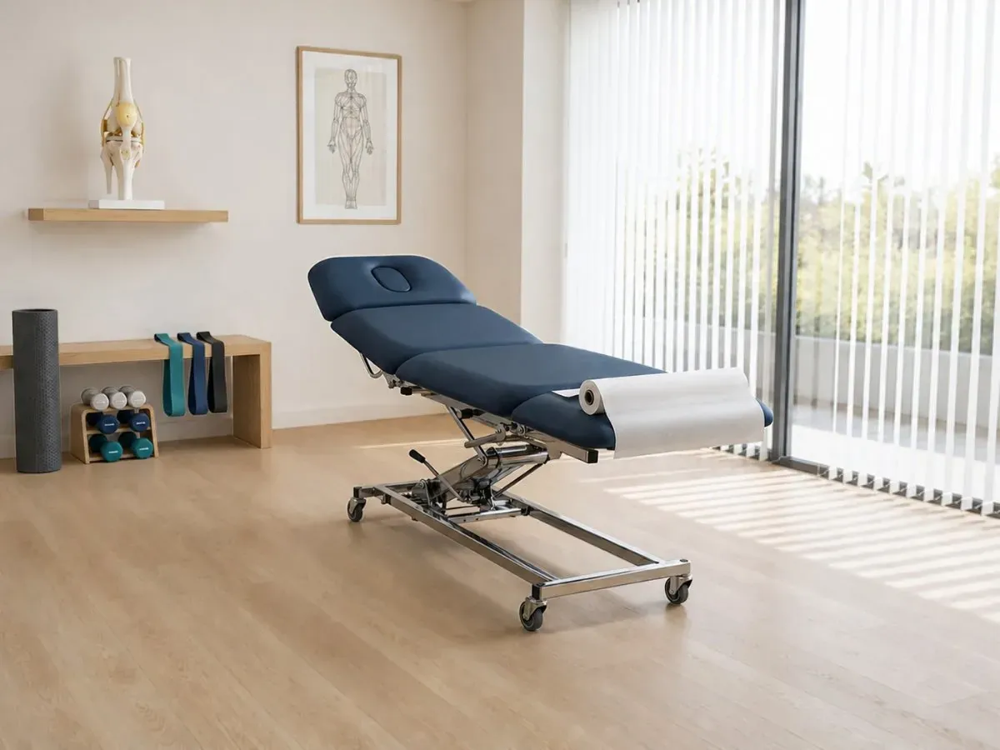

Acupunctuur en shiatsu in Nijmegen: welke praktijk past bij jou?
Bijgewerkt op 24 november 2026.
Acupunctuur en shiatsu komen uit de Chinese en Japanse geneeskunde. Veel mensen proberen het naast de reguliere zorg, bijvoorbeeld bij spanning, pijn of tijdens een kinderwens. In Nijmegen zitten tientallen praktijken. Wij zetten ze op een rij naar waar ze zich op richten.

Zo hebben we gekozen
We lazen in november 2026 de websites van de praktijken in onze bedrijvengids. We beschrijven waar ze zich op richten, maar we beoordelen niet of een behandeling werkt. Heb je klachten, ga dan eerst naar je huisarts.
Vergoeding: veel aanvullende zorgverzekeringen vergoeden acupunctuur (deels) als de therapeut lid is van een erkende beroepsvereniging, zoals de NVA. Kijk in je polis en vraag de praktijk naar hun lidmaatschap.
Acupunctuur
O'lijf Acupunctuur
O'lijf is een praktijk voor Chinese geneeskunde in Nijmegen. De acupuncturist is lid van de NVA, waardoor de behandeling bij de meeste aanvullende verzekeringen (deels) wordt vergoed.
Goed voor: wie acupunctuur vergoed wil krijgen.
Acupunctuur en Shiatsu Praktijk Nijmegen (ASPN)
Doriët Lambèrt heeft 18 jaar ervaring. Ze behandelt met naalden of laser, moxa (warmte), cupping en Chinese voedings- en kruidentherapie. Een behandeling zonder naalden kan ook. Ze is lid van de NVA.
Goed voor: wie bang is voor naalden.
Acupunctuurpraktijk SAAR: plek voor acute pijn
SAAR aan de Berg en Dalseweg richt zich vooral op pijn en heeft altijd plek voor acute pijn. Na drie of vier behandelingen wordt geëvalueerd. Let op: per 1 augustus 2026 zijn de tarieven veranderd.
Goed voor: pijnklachten waar je snel mee terecht wilt.
Acupunctuur Praktijk Huang: Chinese geneeskunde en kruiden
Dr. Lili Huang combineert acupunctuur met tui-na (Chinese massage) en kruiden. De praktijk is verhuisd naar Malvert 2158 in Dukenburg.
Goed voor: traditionele Chinese geneeskunde.
Kinderwens, zwangerschap en overgang
Praktijk Ruoyu Fang: bij een kinderwens
Ruoyu Fang richt zich op vrouwen en mannen met een verminderde vruchtbaarheid, ook als aanvulling op een IVF-traject. Daarnaast behandelt ze zwangerschaps-, menstruatie- en overgangsklachten, met acupunctuur en Chinese kruiden.
Goed voor: stellen met een kinderwens.
Acupunctuur voor Jou: Nijmegen en Lent
Sabina Rabbelier behandelt onder meer bij een kinderwens, rond IUI en IVF, bij een stuitligging (met moxa) en na de bevalling. Ze geeft ook workshops over Chinese voedingsleer en qigong.
Goed voor: begeleiding van zwanger worden tot na de bevalling.
Titia van der Werf: acupunctuur en tuina
Titia van der Werf combineert acupunctuur met tuina-massage. Ze ziet veel mensen met overgangsklachten, stress en spanning. Door haar achtergrond in de hulpverlening behandelt ze ook jongeren met ADHD, autisme of angst, met massage.
Goed voor: overgangsklachten en spanning.
Ook gespecialiseerd in vrouwen: Praktijk Van Hulst (onder meer endometriose en zwangerschap, met een gratis kennismaking van 15 minuten) en Chinese Geneeskunde voor Vrouwen.
Shiatsu
Shiatsuhuis Nijmegen: shiatsu en craniosacraal
Lonneke Knegtel heeft 20 jaar ervaring. Naast shiatsu geeft ze biodynamische craniosacraaltherapie, vaak in combinatie. Haar aanpak noemt ze breed en nuchter.
Goed voor: wie lichaam en hoofd samen wil aanpakken.
Srivatsa: shiatsu en massage
Srivatsa combineert shiatsu met massages, zoals hoofd-, nek- en voetreflexmassage. Vanaf 1 januari 2027 heet de praktijk Blijf Vitaal - Massage, Training en Advies. Boeken kan al via de nieuwe site.
Goed voor: shiatsu als ontspanning.
Ook shiatsu: Huan Mai aan de Sint Annastraat (acupunctuur en shiatsu, op dinsdag en woensdag) en Migorowitz.
Haptotherapie en chiropractie
- Haptotherapie: Haptotherapie Centrum HTC, Hapto in Praktijk, HaptonomiePlus en HaptoCare Nijmegen-Oost.
- Chiropractie: TOPCHIRO Nijmegen.
Zoek je een behandeling die onder de basisverzekering valt? Kijk dan in onze gids fysiotherapie per klacht. Voor ontspanning lees je welke massage bij je past.
Veelgestelde vragen
Wordt acupunctuur vergoed?
Vaak deels, uit de aanvullende verzekering, als de acupuncturist lid is van een erkende beroepsvereniging zoals de NVA. O'lijf en ASPN zijn NVA-lid. Kijk altijd in je eigen polis.
Wat is het verschil tussen acupunctuur en shiatsu?
Bij acupunctuur gebruikt de therapeut dunne naaldjes. Shiatsu is een Japanse massagetherapie met druk van vingers en handen, zonder naalden.
Welke acupuncturist in Nijmegen helpt bij een kinderwens?
Praktijk Ruoyu Fang is gespecialiseerd in vruchtbaarheid. Acupunctuur voor Jou begeleidt ook rond IUI en IVF.
Kan acupunctuur zonder naalden?
Ja, bij ASPN kan de behandeling ook met laser of moxa (warmte).